In 2021, Advendor decided to create its own white label based on their platform, which was eventually named Adelinx. The idea of Adelinx was to let practically anyone create, launch, and manage an affiliate program or network.
It is important to note that during the development of Adelinx (from the summer of 2021 to October-November 2022), the UX/UI design was evaluated and approved by the management. Experienced traffic and advertiser managers from Advendor also participated in the evaluation and idea generation process, as they have significant practical experience with the platform and have access to partner feedback over several years.
Adelinx logo
For me and my design colleague, the work began with creating a logo and brand colors for Adelinx. There were no specific constraints or preferences initially regarding this task. We both created over 10 logo variations, and in the end, the management approved my colleague's version. The main brand colors were decided to be shades of orange.
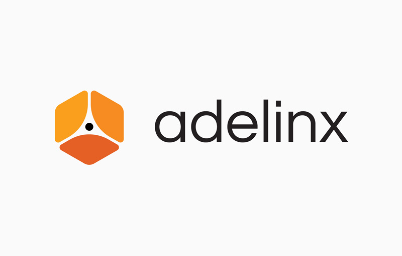
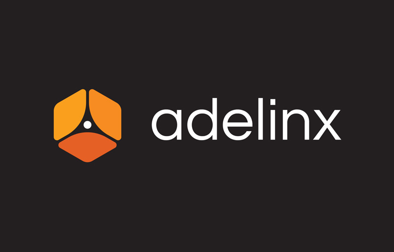
Main tool
My colleague and I decided to use Figma as the main tool for our work. At that time, the decisive factors were that Figma:
- is available for both Mac OS and Windows;
- has a web version;
- provides excellent features for team collaboration and presenting solutions and prototypes.
Both of us were relatively new to Figma, and we were not yet familiar with all its features and conveniences. Later on, we realized that our choice was correct when we delved into the work and discovered the intricacies of the program.
Design process
The subsequent stages included the development of the admin panel for different roles and the front-end website. We started with defining project colors,..
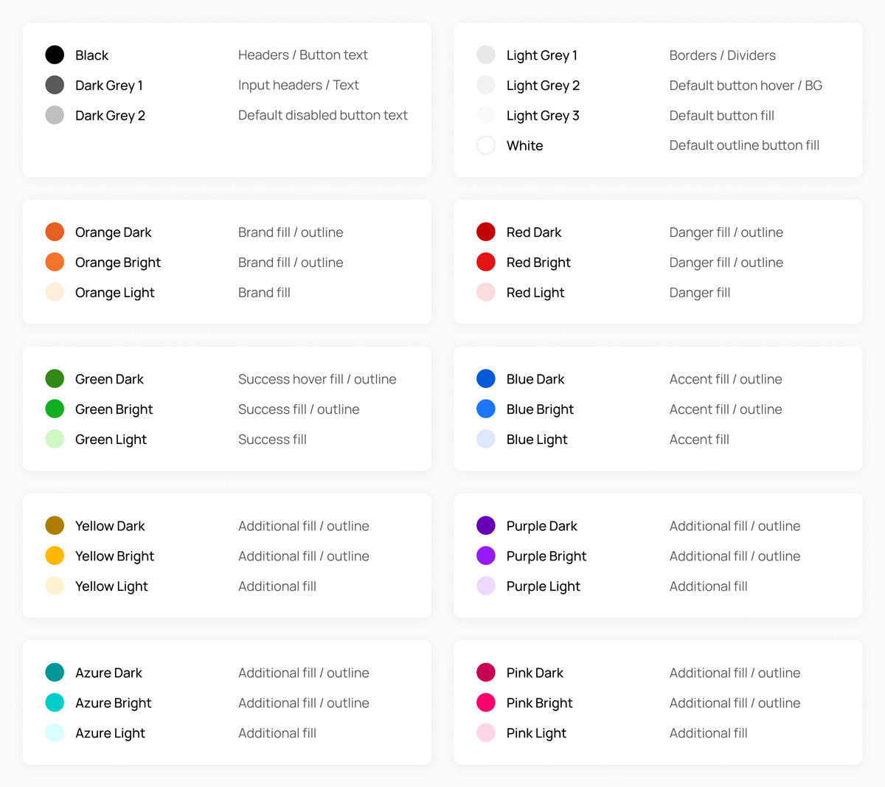
... a spacing system,..
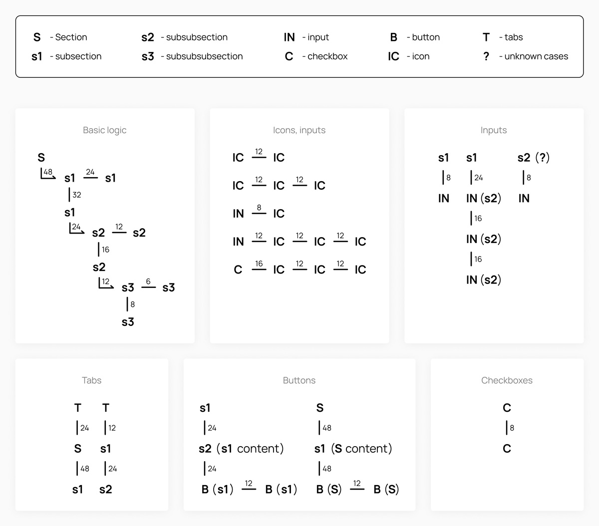
... and project styles for further work.
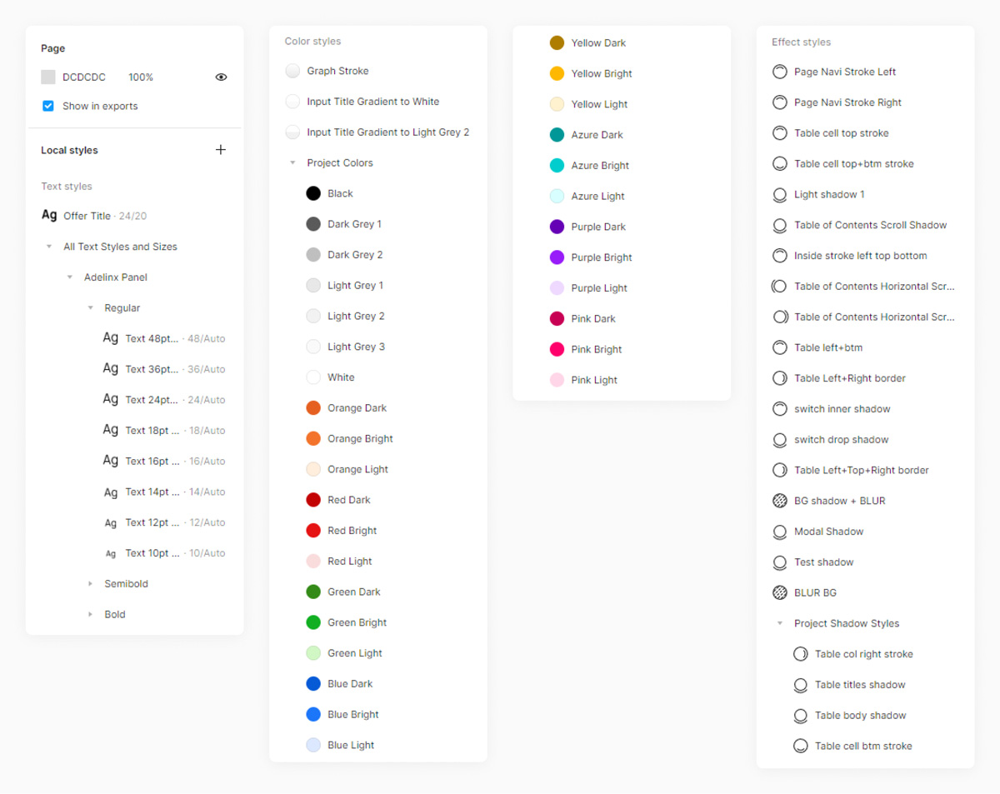
Then we wanted to determine the overall design direction for the basic elements of the admin panel. To do this, we took the structure and logic from Advendor's current admin panel as a basis, rethought the logic, and designed various solutions for the navigation in the form of menu sections, the sidebar with widgets ("profile", "today's statistics", "balance", "language", "promotions"), and the central part with sections like "welcome", "general statistics", "today's statistics", "top offers", and "new offers".
The approved designs of the sidebars were these:
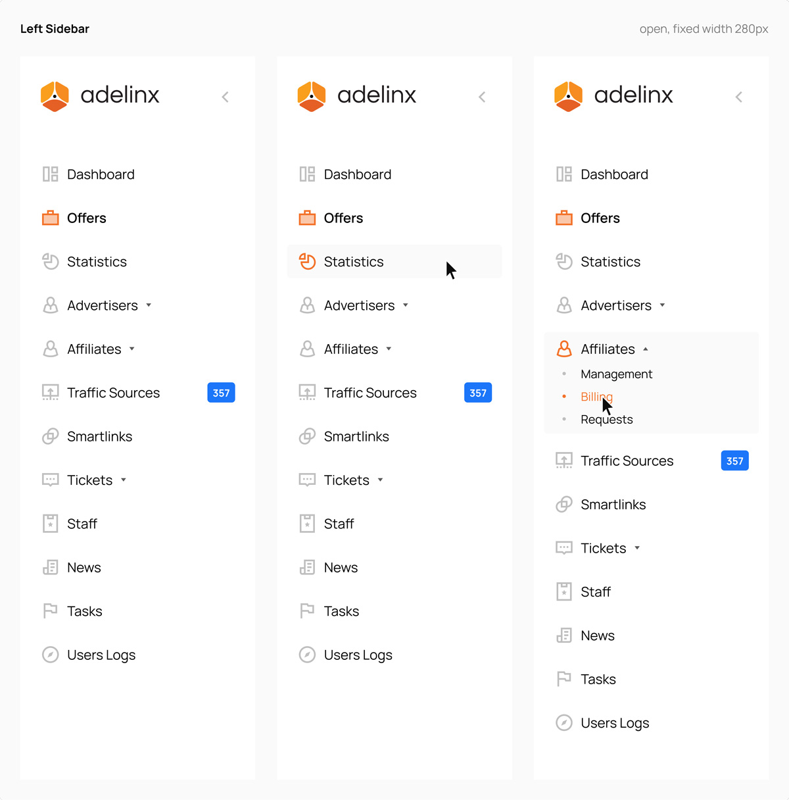
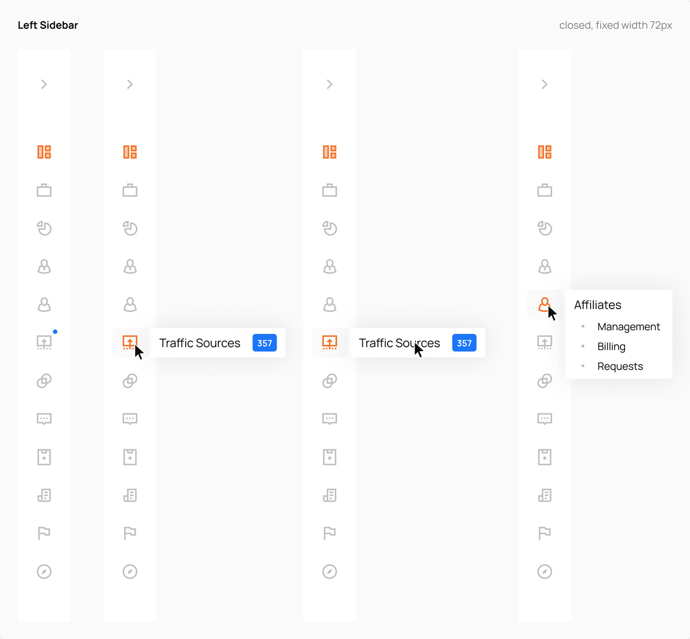
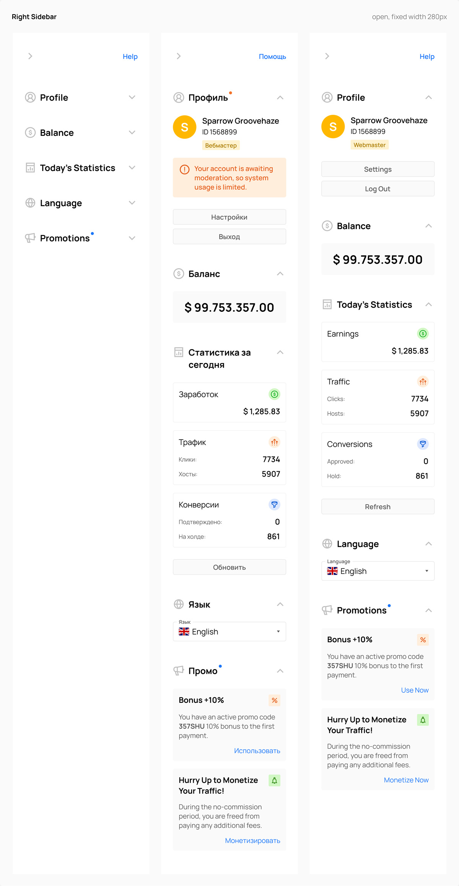
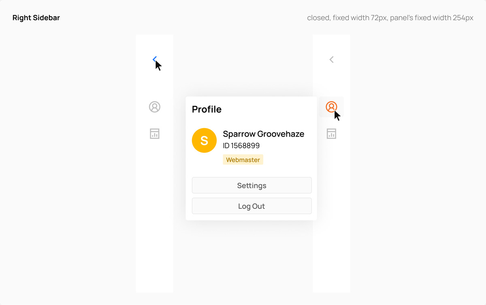
The approved designs of the dashboard sections looked this way:
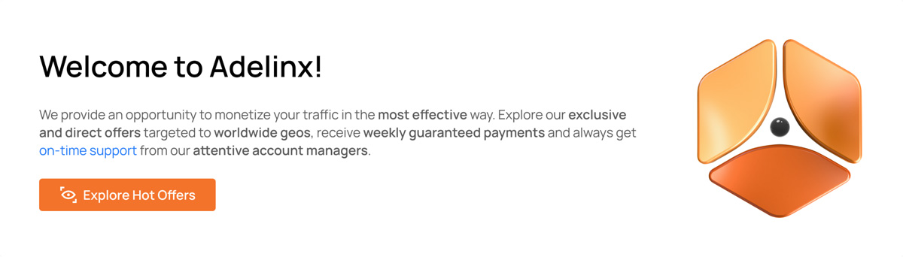
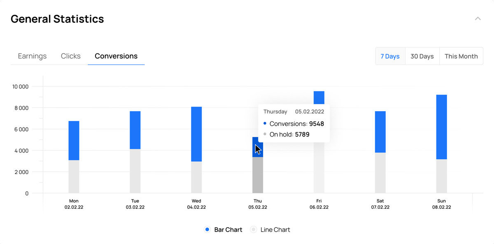
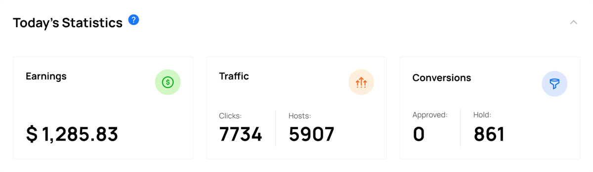
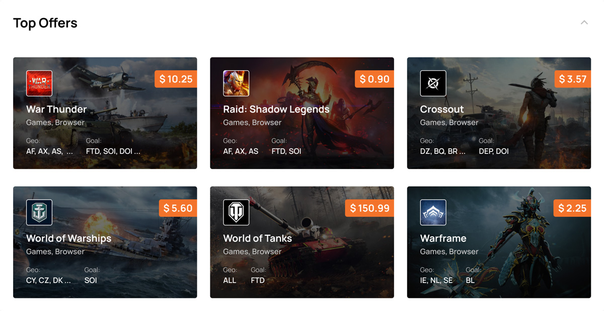
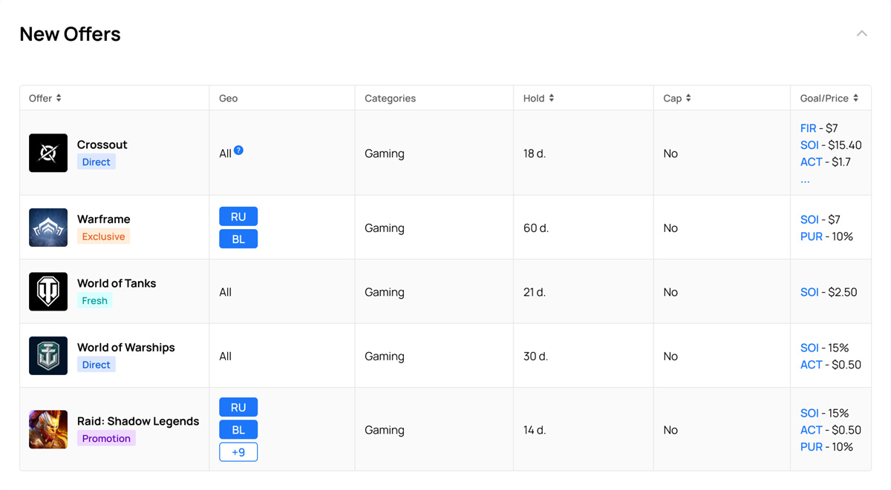
To streamline our design process, we utilized a separate page in Figma called "Drafts" to create multiple design variations and sketches. These drafts were then presented for approval. Once our designs received the necessary approval, we proceeded to transfer the authorized version to the "Project Pages / Components" page. This page served as a hub for development, specifically for the front-end implementation phase. Simultaneously, as designers, we seamlessly transitioned to working on the next sections and elements of the project.
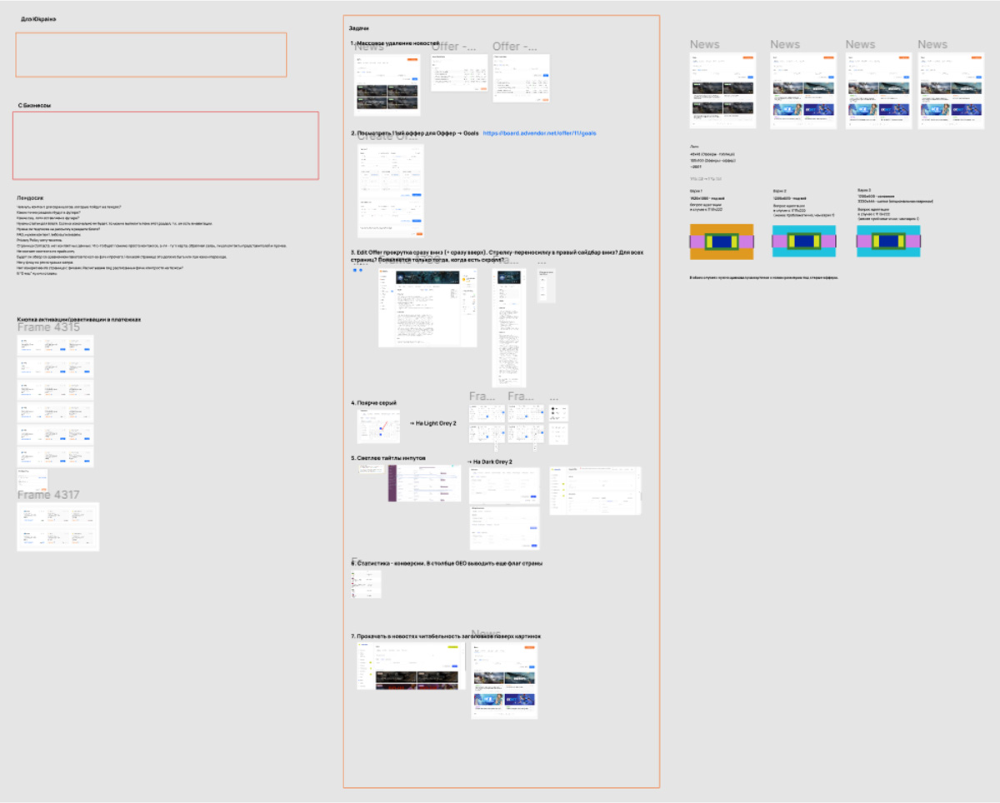
While in the early stages, we had to come up with different visual solutions. Later on, we just needed to continue the initial design logic and adapt it to the subsequent tasks. As practice showed, my colleague was better at generating visual solutions, while I excelled in design logic. Together, we complemented each other very well.
Problem solving
The main problems we encountered were:
- Periodic changes in management decisions regarding what was approved, for example, 1-3 months ago. As the project progressed, the chains of changes that needed to be made became more complex. In this case, the component system in Figma proved to be very important and practical, so my colleague and I focused heavily on that aspect of our work.
- Difficulties in accepting new visual or logical UX/UI solutions, both by management and managers, due to their familiarity with the old (current) design.
- In Figma, there is currently no functionality to create styles or something similar to the component system for spacing, which turned out to be quite important in a large project like this. To address this, we created a schematic spacing system for different cases that we often referred to.
- Creating complex adaptive tables in Figma is quite problematic compared to the capabilities of HTML and CSS. As a solution available in Figma, we created component templates during the work, from which we assembled different types of tables for the admin panel.
- During our work, Figma did not have the "Absolute position" function, which occasionally required creative problem-solving.
Collaboration with front-end developers
From our side, the design was completed to about 80-90% in approximately six months. After that, our role as designers primarily involved comparing the results of the Ukrainian front-end developers' work with the approved designs, which included a significant number of edits, numerous calls and discussions.
Responsive design
According to Advendor data, only a small percentage of users, around 10-15%, use the platform through mobile devices. Therefore, during the development stage, this issue had a proportionate level of importance.
To save time and avoid designing all Adelinx pages and sections for various devices, my colleague and I decided to implement mobile resizing only where it was critically necessary. Often, we simply demonstrated the adaptability of individual sections or elements to the developers, avoiding wasting time on designing repetitive parts.
Final results
Here’s the final look of the "Project Pages / Components" page in Figma. Red frames indicate all the designs for the advertiser’s role and yellow frames the differences for the webmaster’s role.
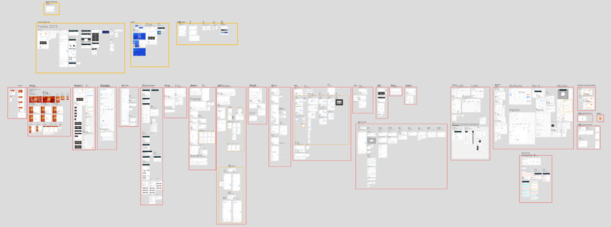
As for the Adelinx website itself, my contribution there was minimal, so there is no point in paying attention to it in this case. You can take a look at the live version here.
In the end, the Adelinx project was brought to an MVP state. However, certain changes occurred within the main company (Burfa) that led to the discontinuation of the design development. Additionally, late stages such as user testing, accessibility testing, and feedback work were not conducted, preventing a comprehensive assessment of the project's success.